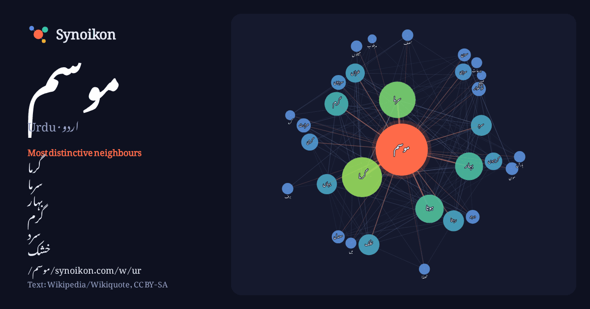

اردو · Urdu · popular word
موسم
“weather” · The words found around it in 877 instances from Urdu Wikipedia, Wikiquote.

Most distinctive neighbours
- گرما 126×
- سرما 110×
- بہار 54×
- گرم 40×
- سرد 37×
- خشک 35×
- خزاں 35×
- گرمیوں 27×
- گرمی 26×
- سردی 25×
- رہتا 25×
- سردیوں 20×
- خوشگوار 19×
- معتدل 16×
- سون 16×
- مون 16×
- حرارت 15×
- برسات 12×
- ٹھنڈا 12×
- مہینوں 11×
× = how many times more often than in general Urdu Wikipedia text.
Most frequent neighbours
- میں 396
- کا 232
- گرما 161
- سے 152
- سرما 134
- اس 91
- ہوتا 81
- بہار 78
- گرم 57
- کو 46
- خشک 44
- رہتا 44
- سرد 44
- یہاں 41
- بھی 40
- جو 38
- خزاں 37
- لیے 37
- جاتا 34
- گرمیوں 31
In context
- برسات یا مون سون (یہ موسم گرما کے حصے میں آتا ہے) 2.موسم خزاں 3.موسم سرما 4.موسم بہار موسم سرما موسم گرما مون سون موسم بہار موسم خزاں ایک اُردو-انگریزی Wikipedia snippets · موسم
- 05000°E / 31.25000; 73.05000 فائل:Agriculture Uni FSD.JPG فیصل آباد کا موسم زیادہ تر گرم اور خشک ہوتا ہے۔ فیصل آباد کا زیادہ سے زیادہ درجہ حرارت گرمیوں Wikipedia snippets · فیصل آباد کا موسم
- سب سے بڑا دن 21 جون کو اس موسم میں ہوتا ہے۔ جب شمالی نصف کرے میں موسم گرما ہوتا ہے تو جنوبی نصف کرے میں سردیاں۔ گرمیوں کا موسم تب ہوتا ہے جب سورج کی شعائیں Wikipedia snippets · موسم گرما
- ایک موسم کا نام ہے جو شمالی نصف کرہ میں مارچ سے مئی تک ہوتا ہے اور جنوبی نصف کرہ میں ستمبر سے نومبر تک ہوتا ہے۔ یہ نہ گرم ہوتا ہے نہ سرد۔ اس موسم میں Wikipedia snippets · بہار
- برطانوی موسم گرما وقت (British Summer Time - BST) مملکت متحدہ میں شہری وقت ہے جو گرینچ معیاری وقت سے ایک گھنٹہ آگے ہے۔ مندرجہ ذیل جدول ماضی قریب اور مستقبل Wikipedia snippets · برطانوی موسم گرما وقت
- موسم کی پیش قیاسی (انگریزی: Weather forecasting) میں سائنس اور ٹیکنالوجی کی مدد سے کسی مخصوص جگہ اور وقت کے موسم کے حالات کا اندازہ کیا جاتا ہے۔ لوگ موسم Wikipedia snippets · موسم کی پیش قیاسی
- شعاعیں سیدھے رخ نہیں آتیں اس وجہ سے موسم سرما ہوتا ہے۔ جب شمالی نصف کرہ میں موسم سرما ہوتا ہے تو جنوبی نصف کرے ميں موسم گرما۔ زیادہ تر پودوں کے پتے گر جاتے Wikipedia snippets · موسم سرما
- منعقد ہوتی ہے ہما رے وطن میں مو سم بہا ر انتہا ئی خوبصورت اند از لیے آتا ہے موسم بہا ر کا ئنا ت کا ایک انمول عطیہ ہے اس مو سم میں حسن وجمال حقیقی معنوں میں Wikipedia snippets · موسم بہار ( بچوں کے لیے مضمون )
More Urdu words
Precomputed on 2026-10-09 with default settings (±5 words, medium corpus). The interactive map can refresh it with live data.